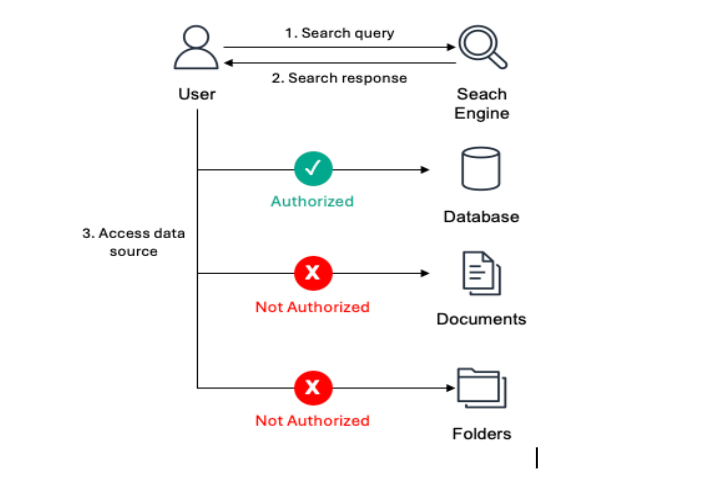
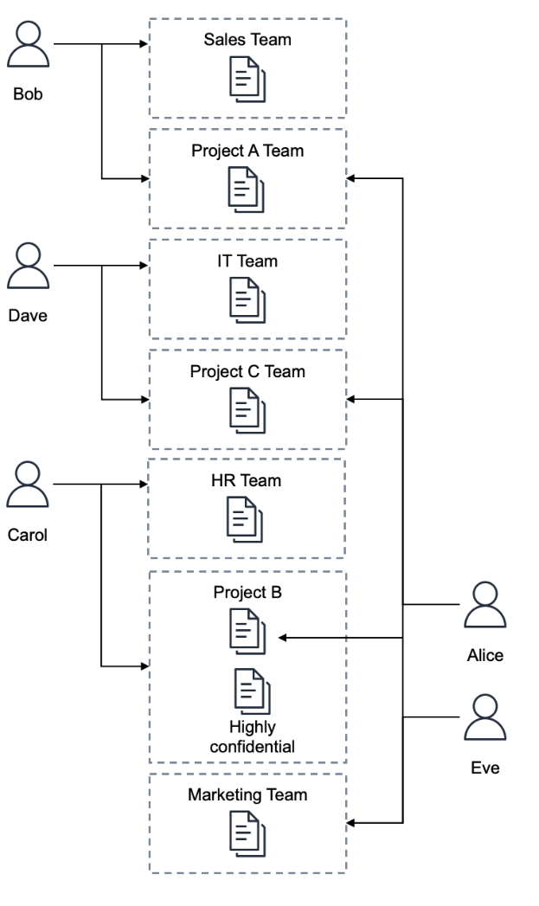
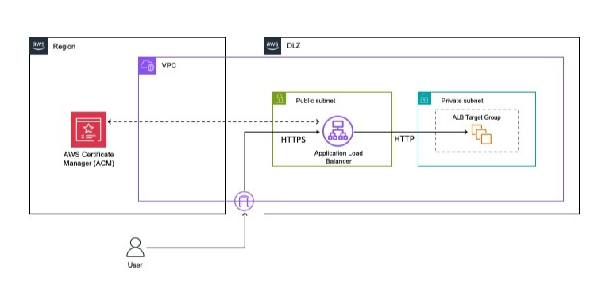

Blog 2
Data access authorization features in RAG systems
By Riggs Goodman III, September 18, 2025. | In Advanced (300), Amazon Bedrock, Best Practices, Generative AI, Security, Identity, & Compliance
Organizations today are increasingly using large language models (LLMs) to deliver new forms of customer interaction through generative AI–powered chatbots, virtual assistants, and intelligent search capabilities. To enhance these interactions, organizations are adopting Retrieval-Augmented Generation (RAG) to combine proprietary data, domain expertise, and internal documents in order to provide more accurate and context-aware responses. With RAG, LLMs use an external knowledge repository—typically backed by a vector store—to incorporate specific knowledge data before generating a response.
Our customers tell us they’re concerned that adding extra context to prompts could result in sensitive information being leaked to principals (users or applications) that may exist in some of these tools, or from unstructured data in the knowledge base. As discussed in previous posts (Part 1, Part 2), LLMs should be treated as untrusted entities because they don’t enforce access controls (authorization) as part of their responses. A reasonable mental model for organizations is to assume that any data sent to an LLM in a prompt could be returned to the principal. With tools (APIs the LLM can call to interact with external resources), you can pass the principal’s identity token into the tool to determine what the principal is allowed to access and which actions are permitted. Capabilities across many vector databases—including metadata filters and synchronizing identity information between the data source and the knowledge base—can improve knowledge base retrieval results and provide basic filtering. However, this does not provide strong, data-source–based authorization with the data source acting as the single source of truth, which some customers are looking for.
In this post, I present an architectural pattern to provide strong authorization mechanisms for knowledge base retrieval results, along with an example implementation using Amazon S3 Access Grants with Amazon Bedrock Knowledge Bases. I also share considerations for implementing similar architectural patterns with other data sources.
Overview of using RAG
RAG architectures share many similarities with search engines, but there are also some important differences. Although both use indexed data sources to find relevant information, their approaches to data access differ. Search engines provide links to information sources, requiring users to access the original data source directly based on the permissions granted to them. This process is illustrated in Figure 1.

Figure 1
Figure 1: A principal (in this example, the User) accessing the data source after the search engine returns results.
Unlike search engines, RAG systems return results from the vector database directly through the LLM, bypassing access checks at the original data source. Although metadata filtering can help control access, this approach has two key challenges. First, vector databases sync only periodically, so access changes in the data source aren’t updated immediately. Second, with complex identity permissions—where a principal can belong to hundreds of groups—accurately filtering results becomes very difficult. This makes metadata filtering insufficient for organizations that require stricter authorization mechanisms. This process is illustrated in Figure 2.

Figure 2
Figure 2: An application accessing data in a vector database.
To implement strong authorization for data access in a knowledge base, verify access directly at the data source rather than relying on intermediary systems. Using the search engine example, authorization is verified when retrieving the actual results from the data source, not during the initial search. For vector databases, the generative AI application validates access by sending an authorization request to the data source before retrieving data. This approach ensures that the data source—where the authoritative access control rules are maintained—determines whether the principal can access specific objects. This real-time authorization check means access changes are reflected immediately when accessing the data source. This authorization pattern is similar to how AWS Lake Formation manages access to structured data. Lake Formation evaluates permissions when a principal requests access to a database or table, granting or denying access based on the permissions defined for that principal. You can implement similar authorization controls for vector database results before providing that context to large language models.
Let’s examine an example solution using S3 Access Grants with Amazon Bedrock Knowledge Bases in a real-world scenario.
Solution overview: S3 Access Grants with Bedrock Knowledge Bases
In the following example, you have an organization, ACME, that wants to build a generative AI chatbot for its employees. There are multiple teams in the organization (Marketing, Sales, HR, and IT) working on projects across the organization. You have five users (the principals accessing the application) with the following group permissions:
- Alice: Marketing Team
- Bob: Sales Team, Project A Team
- Carol: HR Team, Project B Team
- Dave: IT Support, Project C Team
- Eve: Marketing Team
Each principal will be able to access the corresponding project folder (for example, /projects/projectA) or department folder (for example, departments/marketing/). Marketing will also have access to everything under the projects prefix (/projects/*) unless the files are considered highly confidential. To mark Project B files as highly confidential, you add metadata tags to the objects in the Project B prefix with classification = 'highly confidential'. Figure 3 shows the relationship between principals and access to different folders in the data source. For example, only Carol can access highly confidential data in the Project B folder.

* Figure 3: Organization group permissions *
To grant each principal access to objects in the knowledge base, you use Amazon S3 Access Grants. You can learn how to set up S3 Access Grants in Part 1 or Part 2 of this blog series.
In AWS IAM Identity Center, you add each user to their respective groups. For example, Bob is added to both the Sales Team and the Project A Team groups, as shown in Figure 3.
Each prefix (for example, projectA/, marketing/) contains a single file that provides the team’s status. In addition, for Project B, you also add the status.txt.metadata.json file to tag the object as highly confidential because it’s an HR project.
| Project B status is as follows: Project B = Compensation Update STATUS = YELLOW Project completion = 50% Notes: we are tracking behind schedule. Need to pull more resources to get it completed by next month. |
|---|
And the metadata.json file will contain the following:
| { “metadataAttributes” : { “classification” : “highly confidential” } } |
|---|
After the knowledge base and S3 Access Grants are configured, you can start testing authorization for chunks in the knowledge base. The application workflow is described as follows (as illustrated in Figure 4):
-
The user logs in to the generative AI application using their identity provider (IdP) (steps 1a, 1b, and 1c).
-
The generative AI application exchanges tokens with IAM Identity Center and assumes a role on behalf of the user (step 2).
-
The generative AI application calls S3 Access Grants to retrieve the list of grants the user is allowed to use (step 3).
-
The user submits a query to the generative AI application (step 4).
-
The generative AI application sends the query to the knowledge base (step 5).
-
The generative AI application compares the chunks returned from the knowledge base with the access scopes granted to the user (step 6).
-
Only the scopes the user is authorized to access are forwarded to the LLM to generate a response (step 7).
-
The generative AI application repeats steps 5–7 until you want to refresh the grant list (repeat step 4) or when the token expires (repeat steps 3 and 4).

*** Figure 4: Application flow for authorizing data access from the knowledge base ***
The grant scopes are shown in the following table:
| Grant scope | Grant ID |
|---|---|
| s3:// amzn-s3-demo-bucket/departments/sales/* | edbd7575-0ba8-4837-8df1-07fe5d89f973 (sales group) |
| s3:// amzn-s3-demo-bucket/departments/it/* | a8f1d390-10d1-7037-7b27-c9fcf0b04441 (it group) |
| s3:// amzn-s3-demo-bucket/departments/marketing/* | 28f1e3c0-8081-70fe-6b4f-531ae370e7fd (marketing group) |
| s3:// amzn-s3-demo-bucket/departments/hr/* | 38f11380-d011-70fb-261b-aa50d7edc1d5 (hr group) |
| s3:// amzn-s3-demo-bucket/projects/projectA/* | c84173b0-b071-70c5-3207-dadc1e6f76a9 (project A group) |
| s3:// amzn-s3-demo-bucket/projects/projectB/* | 2871d3c0-6001-7073-baaf-62717f56b8d0 (project B group) |
| s3:// amzn-s3-demo-bucket/projects/projectC/* | f8a183b0-f001-707b-aa8e-1826ca04595e (project C group) |
| s3:// amzn-s3-demo-bucket/projects/* | 28f1e3c0-8081-70fe-6b4f-531ae370e7fd (marketing group) |
In this example, you can use Bob’s role to illustrate how chunk authorization works. When you call the knowledge base without performing any data authorization steps, you receive a response like the following when asking, “What is the status of my project?” For each object in the data source, you also include metadata as a *.metadata.json file, which the knowledge base uses to assign specific key/value pairs to each object. This is where you set Project A and Project C to confidential and Project B to highly confidential, as mentioned earlier. You pass this filter as part of the request to the Bedrock knowledge base using RetrievalFilter in retrievalConfiguration. The following code shows the response from the Bedrock knowledge base:
{
"ResponseMetadata": {
...
},
"retrievalResults": [
{
"content": {
"text": "Project A status is as follows: Project A = Sales Strategy STATUS = GREEN Project completion = 80% Notes: we are on track to complete the project by end of month",
"type": "TEXT"
},
"location": {
"s3Location": {
"uri": "s3://amzn-s3-demo-bucket/projects/projectA/status.txt"
},
"type": "S3"
},
"metadata": {
"x-amz-bedrock-kb-source-uri": "s3://amzn-s3-demo-bucket/projects/projectA/status.txt",
"classification": "confidential",
"x-amz-bedrock-kb-chunk-id": "1%3A0%3AnTT-15UBTG7d8qG4nL6p",
"x-amz-bedrock-kb-data-source-id": "CIUUDCONV2"
},
"score": 0.558023
},
{
"content": {
"text": "Project C status is as follows: Project C = Infrastucture Update STATUS = RED Project completion = 30% Notes: ROI is not meeting expectations, rethinking strategy with project",
"type": "TEXT"
},
"location": {
"s3Location": {
"uri": "s3://amzn-s3-demo-bucket/projects/projectC/status.txt"
},
"type": "S3"
},
"metadata": {
"x-amz-bedrock-kb-source-uri": "s3://amzn-s3-demo-bucket/projects/projectC/status.txt",
"classification": "confidential",
"x-amz-bedrock-kb-chunk-id": "1%3A0%3AnDT-15UBTG7d8qG4mb78",
"x-amz-bedrock-kb-data-source-id": "CIUUDCONV2"
},
"score": 0.52052265
}
]
}
Data from Project B is not included in the output because it is labeled as highly confidential. Data from Project C is included, even though Bob should not have access to it—so let’s walk through how to authorize Bob correctly. In the following steps and with the provided Python sample code, I’ll show how to call each function shown in the code block below. You can use this code as part of an application to validate authorization for the data returned from the Bedrock knowledge base.
# Execute the workflow
# 1. Assume a role to access S3
client_s3_oidc = assume_role(
args.client_id, args.grant_type, args.assertion,
args.role_arn, args.role_session_name, args.provider_arn
)
# 2. Retrieve the S3 scopes granted to the caller
scopes = get_caller_grant_scopes(client_s3_oidc, args.account)
# 3. Filter chunks based on the caller's grants
authorized, not_authorized = check_grant_scopes(chunks, scopes)
Step 1: The user logs in to the generative AI application using an IdP
When Bob first accesses the generative AI application, the application redirects him through a single sign-on (SSO) flow to authenticate with his IdP. Bob receives a signed identity token from the IdP that asserts his identity. An example of Bob’s identity token is shown as follows:
| { “sub”: “sub”, “email”: “bob@example.com”, “aud”: “bob”, “iss”: “https://tokens.identity-solutions.example.com”, “exp”: 1744219319, “iat”: 1744218719, “name”: “bob” } |
|---|
Step 2: Exchange the token with IAM Identity Center
After Bob is authenticated and passes his token to the generative AI application, the application exchanges the IdP identity token for an IAM Identity Center identity token and obtains temporary credentials on Bob’s behalf. You create a Python function named assume_role that takes various variables, allowing Bob to assume a role in AWS:
- client_id: A unique identifier string for the client or application. This value is the ARN (Amazon Resource Name) of the application configured with OAuth grants.
- grant_type: The OAuth grant type; in this example, it’s JWT Bearer.
- role_arn: The ARN of the role to assume.
- role_session_name: An identifier for the assumed role session.
- provider_arn: The ARN of the context provider from which the trusted context assertion is created.
- client_assertion: A JSON Web Token (JWT) issued by a trusted token issuer.
In the sample Python function shown below, you perform the following steps:
- Open two boto3 clients:
sso-oidc(to create the token with IAM) andsts(to assume a temporary role for Bob). - Use
client_id,grant_type, andclient_assertionto callcreate_token_with_iam, generating an IAM Identity Center token and storing it intoken_response. - Inside
token_response, extractsts:identity_context, which is required to assume the role for Bob. - With
identity_context, pass this context intoassume_rolealong withrole_arn,role_session_name, andprovider_arnto obtain temporary credentials for Bob. - Finally, return a boto3
s3-controlclient using Bob’s temporary credentials to validate his access through S3 Access Grants.
def assume_role(client_id, grant_type, client_assertion, role_arn, role_session_name, provider_arn):
"""
Assume an IAM role using SSO/OIDC authentication and return an S3 control client.
Args:
client_id: The ID of the OIDC client
grant_type: The type of grant being requested
client_assertion: The client assertion token
role_arn: ARN of the role to assume
role_session_name: Name for the temporary session
provider_arn: ARN of the identity provider
Returns:
boto3.client: An S3 control client with temporary credentials
"""
client_oidc = boto3.client('sso-oidc')
client_sts = boto3.client('sts')
try:
# Get ID token from IAM using SSO OIDC
token_response = client_oidc.create_token_with_iam(
clientId=client_id,
grantType=grant_type,
assertion=client_assertion
)
# Extract identity context from token
id_token = jwt.decode(token_response['idToken'], options={'verify_signature': False})
identity_context = id_token['sts:identity_context']
# Assume role using identity context
temp_credentials = client_sts.assume_role(
RoleArn=role_arn,
RoleSessionName=role_session_name,
ProvidedContexts=[{
'ProviderArn': provider_arn,
'ContextAssertion': identity_context
}]
)
# Create and return S3 control client with temporary credentials
creds = temp_credentials['Credentials']
return boto3.client(
's3control',
region_name='us-west-2',
aws_access_key_id=creds['AccessKeyId'],
aws_secret_access_key=creds['SecretAccessKey'],
aws_session_token=creds['SessionToken']
)
except ClientError as e:
print(f'Error: {e}')
sys.exit(1)
Step 3: Retrieve the caller grant scopes
Next, you need to retrieve what Bob is allowed to access in the data source using S3 Access Grants. In this example, you validate what Bob is authorized to access at the data-source level, rather than checking each individual S3 object.
To retrieve the list of prefixes Bob is allowed to access, you perform the following steps in the get_caller_grant_scopes function:
- Pass in the
s3controlclient returned byassume_role, along with theaccountassociated with S3 Access Grants. - Using Bob’s temporary role, call
list_caller_access_grants. This returns the list of access grants Bob has.
For example, when you call this function for Bob, you receive a response from list_caller_access_grants like the following, showing that Bob has access to the sales and projectA prefixes:
| { “ResponseMetadata”: { … }, “CallerAccessGrantsList”: [ { “Permission”: “READ”, “GrantScope”: “s3:// amzn-s3-demo-bucket/departments/sales/*”, “ApplicationArn”: “ALL” }, { “Permission”: “READ”, “GrantScope”: “s3:// amzn-s3-demo-bucket/projects/projectA/*”, “ApplicationArn”: “ALL” } ] } |
|---|
You add the scopes into an array and return it to the application. An example implementation is shown below. Note: you remove the * from the access grant because each chunk’s URI is a full path, not just a prefix.
def get_caller_grant_scopes(client, account):
"""
Retrieve the S3 access scopes granted to a caller.
Args:
client: S3 control client with assumed role credentials
account: AWS account ID
Returns:
List of S3 path prefixes the caller is authorized to access
"""
try:
# Get list of access grants for the caller
response = client.list_caller_access_grants(AccountId=account)
# Extract S3 path prefixes and remove trailing wildcards
scopes = [grant['GrantScope'].replace('*','') for grant in response['CallerAccessGrantsList']]
return scopes
except ClientError as e:
print(f'Error: {e}')
sys.exit(1)
At this point, you have the list of grant scopes Bob is allowed to access in the data source. This information can now be used to compare against the chunks returned from the knowledge base in order to validate access before sending the final prompt (with additional context) to the LLM.
Step 4: Check caller grant scopes
The final step is to compare the chunks returned from the knowledge base with the list of grants that Bob is allowed to access.
To do this, you define the check_grant_scopes function and pass in both arguments: the chunks and the scopes Bob is authorized to access.
The chunks variable is an array of dictionaries; you iterate through it and validate each chunk against the list of scopes, as shown in the example code below.
- Iterate through each chunk passed into the function.
- For each chunk, check whether the chunk location starts with a prefix in the S3 access grants.
- If there’s a match, add the chunk (along with the matching scope) to the authorized chunks list.
- If there’s no match, add the chunk to the not_authorized chunks list.
The function returns two lists—one for authorized chunks and one for not authorized chunks—so you can easily see which data Bob should not be able to access.
def check_grant_scopes(chunks, scopes):
"""
Check which chunks a user is authorized to access based on their granted scopes.
Args:
chunks: List of dictionaries containing content chunks with 'location' keys
scopes: List of authorized S3 path prefixes the user has access to
Returns:
tuple: (authorized_chunks, unauthorized_chunks)
"""
authorized = []
not_authorized = []
# If user has no scopes, they are not authorized for any chunks
if not scopes:
return [], chunks
# Check each chunk against available scopes
for chunk in chunks:
location = chunk['location']
authorized_scope = next((scope for scope in scopes if location.startswith(scope)), None)
if authorized_scope:
chunk['scope'] = authorized_scope
authorized.append(chunk)
else:
not_authorized.append(chunk)
return authorized, not_authorized
When you run the function above for Bob along with the chunks returned from the knowledge base, you get the list of authorized and not authorized chunks as shown in the following example.
# Authorized:
[
{
"content": "Project A status is as follows: Project A = Sales Strategy STATUS = GREEN Project completion = 80% Notes: we are on track to complete the project by end of month",
"location": "s3://amzn-s3-demo-bucket/projects/projectA/status.txt",
"scope": "s3://amzn-s3-demo-bucket/projects/projectA/"
}
]
# Not Authorized:
[
{
"content": "Project C status is as follows: Project C = Infrastucture Update STATUS = RED Project completion = 30% Notes: ROI is not meeting expectations, rethinking strategy with project",
"location": "s3://amzn-s3-demo-bucket/projects/projectC/status.txt"
}
]
Considerations for the solution
When implementing an authorization architecture for RAG systems, there are several important factors to understand because they affect security, performance, and scalability. Considering these factors carefully helps ensure your system maintains strong security controls while optimizing performance and remaining flexible across multiple data sources. Key considerations include:
-
In this example, you used S3 Access Grants as a way to validate access. However, this architecture can be applied to other data sources as well, as long as the data source URI is returned by the knowledge base and an API is available to validate the principal’s access—similar to the
get_caller_grant_scopesfunction described earlier. -
Using S3 Access Grants provides an authorization mechanism for principals to access the data source. However, you can still apply additional access control policies per bucket by adding key/value tags or data source–level policies, if needed. In this way, a principal can be denied access to a bucket even if S3 Access Grants allows it.
To support this, you can add metadata to the vector database so the system can filter queries into the knowledge base, as shown in the earlier example. -
Just as data in the knowledge base can become stale between resyncs, the list of authorized scopes can also become inaccurate over time. You should determine how frequently you refresh the grant list (step 3 in Figure 4) and the lifetime of the assumed-role session (step 2 in Figure 4).
-
Depending on which chunks the principal is allowed to access and what the knowledge base returns, some chunks may be removed before being sent to the LLM. From a security perspective, this is desirable because it ensures users cannot access data they are not authorized to see.
Conclusion
In this post, I introduced an architectural pattern to implement strong authorization mechanisms for results returned from a knowledge base. You learned the importance of strict authorization in a knowledge base and how to implement it using Amazon S3 Access Grants.
Finally, we reviewed real code examples that demonstrate how the mechanism works when combining Amazon Bedrock Knowledge Bases with S3 Access Grants—allowing you to control data access in a way that is safer, more flexible, and more effective in RAG systems.
To learn more about security in generative AI systems, see additional posts on the AWS Security Blog and AWS blog posts covering generative AI on the AWS Blog.
If you have feedback about this post, please leave a comment in the Comments section below.
If you have questions related to this post, please contact AWS Support for assistance.
About the authors
| Riggs Goodman III Riggs is a Principal Partner Solution Architect at AWS. His current focus is security and networking for AI, providing technical guidance, architectural patterns, and direction to customers and partners building AI workloads on AWS. Internally at AWS, Riggs focuses on driving the overall technical strategy and innovation across AWS service teams to address customer and partner challenges. |
|---|
.